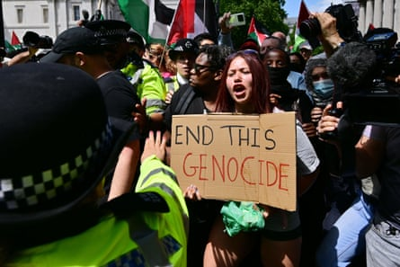
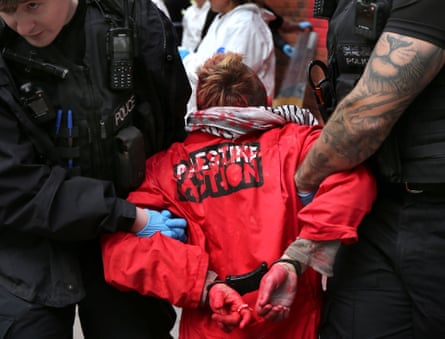

If this interview had taken place in a week’s time, Huda Ammori might have been arrested. If this interview had been published in a week’s time, the Guardian might also have been breaking the law.
Ammori, a co-founder of Palestine Action, said she was finding it “very hard to absorb the reality of what’s happening here”. She said: “I don’t have a single conviction but if this goes through I would have co-founded what will be a terrorist organisation.”
By “this” she means the UK government’s hugely controversial proposal to ban Palestine Action under anti-terrorism laws, placing it alongside the likes of Islamic State and National Action – the first time a direct action group would be classified in this way.
If the group is proscribed next week, as is expected, being a member of or inviting support for Palestine Action will carry a maximum penalty of 14 years. Wearing clothing or publishing a logo that arouses reasonable suspicion that someone supports Palestine Action will carry a sentence of up to six months.
Palestine Action protest in London after the hugely controversial UK government proposal to ban the group under anti-terrorism laws.Photograph: James Veysey/Shutterstock
As far as the government is concerned – and campaign groups that have been lobbying ministers – Palestine Action deserves it. This week Yvette Cooper , the home secretary, decried its “long history of unacceptable criminal damage” and claimed: “Its methods have become more aggressive, with its members demonstrating a willingness to use violence.”
Beyond the claim and counter-claim, the debate over the decision to ban Palestine Action is as much about free speech and the use of counter-terrorism laws to stop protests.
If Ammori is concerned for herself, she does not show it. In an exclusive interview, she said: “Obviously people in Palestine Action understand the severity of what’s happening and there’s a sense of frustration, but there’s also a lot of unity in terms of wanting to fight this and not crumble to pressure.
“I think they’re completely shooting themselves in the foot if they do this – they are completely delegitimising their own laws, which I think are already quite illegitimate, but in the sense that there have been thousands of people who’ve come out on the streets, so many people on social media, people in the media etc who’ve come out in support. I can’t think of any precedent for that, where a group is facing proscription and there’s an outpouring of support from the general public. I think that says enough about whether or not we should be labelled terrorists.”
Cooper announced the proscription plan on Monday, three days after Palestine Action broke into RAF Brize Norton in Oxfordshire and sprayed paint into the jet engines of two military aircraft that it claimed were helping to refuel US and Israeli fighter jets. It was a deeply embarrassing security breach at a time when the government is trying to bolster its defence credentials.

Footage shows Palestine Action breaking into Brize Norton airbase – video
It was a far cry from when Palestine Action started out in 2020. Ammori said they had so little funds that they would go to actions carrying supplies in plastic carrier bags and make stencils out of cardboard.
The 31-year-old said her activism was piqued by volunteering with refugees in Greece while she was at university. Many of them were from Palestine and Iraq, where her father and mother respectively are originally from, and she realised “you have to tackle the root cause of these issues”.
She later worked for the Palestine Solidarity Campaign on boycott and divestment campaigns and lobbying MPs, but she left after two years after feeling as if “you’re constantly banging your head against a brick wall, you’re constantly trying to reason with people, with the facts, and what you get back is nothing and the complicity continues”.
Ammori then joined up with others who had carried out direct actions (as she had done in 2017) against the Israeli arms manufacturer subsidiary Elbit Systems UK, to form Palestine Action “with the aim of ending British complicity with the colonisation of Palestine”.
Huda Ammori, co-founder of Palestine Action.Photograph: Abdullah Bailey
She estimates the group has carried out hundreds of actions, occupying buildings, spraying red paint and destroying equipment, taking video footage to share on social media, going from “strength to strength”.
As its activities have increased since Israel began its assault on Gaza after the 7 October 2023 attacks by Hamas, so has pressure on the government to clamp down on the group, even though its activists are already routinely arrested and charged under existing laws for offences such as criminal damage, violent disorder and burglary.
Cooper said they had caused millions of pounds of damage during a “nationwide campaign of direct criminal action against businesses and institutions, including key national infrastructure and defence firms”.
Ammori believes part of the reason for proscription is that Palestine Action activists have regularly been acquitted, and where convicted jail time has been rare, although she estimates that dozens have spent time in prison while awaiting trial.
“They’ve tried to do a few different things to try and deter us, from making it harder to rely on legal defences or increasing use of remand, or they raid you a lot more and then put more severe charges on you,” she said. “It hasn’t [deterred us] so now they’re hugely overreaching because they don’t like us or agree with our cause.”
She cites activists previously cleared by courts for actions against UK military bases trying to stop war crimes in Iraq, East Timor and Yemen, “but as soon as it’s done for Palestine that’s it, you’re branded as a terrorist. It’s terrifying for everyone that Britain thinks it’s appropriate to call to label this a terrorist organisation. The counter-terrorism laws in Britain are so extreme – it’s one of the only countries, the only country, where it’s actually an offence to recklessly show support for a proscribed organisation. So it’s a complete assault on free speech.”
She also points out that none of the overseas chapters of Palestine Action – unaffiliated to but inspired by the UK group – have been banned as terrorists.
Palestine Action activists are already routinely arrested and charged under existing laws for offences such as criminal damage, violent disorder and burglary.Photograph: Martin Pope/ZUMA Press Wire/REX/Shutterstock
Ammori believes the Conservatives would not have resorted to proscription, as they had ample opportunity to do so while in government, and it is only under Labour that activists have been arrested – but not charged so far – under the Terrorism Act, which allows for them to be held without a charging decision for 14 days.
“[Ministers] have gone off the back of what pro-Israel lobby groups have said about us, from probably Elbit Systems and the Israeli government over the years as well, rather than do any factchecking,” she said. “It’s just completely rushed and done for political agenda, and without any consultation with us.”
Freedom of information requests have shown that the UK government has separately met Elbit and Israeli embassy officials , although documents have been heavily redacted so that details are scarce. A 2022 briefing note for the then home secretary, Priti Patel, before a meeting with Elbit had a section titled “Past lobbying” but all details had been redacted. When asked previously about the document, Elbit did not comment. It did not respond to a request to comment on the matters raised in this article.
Elements of Cooper’s ministerial statement mirrored claims made by We Believe in Israel in a report published this month calling for Palestine Action to be banned – namely references to activists targeting infrastructure supporting Ukraine, Nato and Jewish-owned businesses and universities.
Ammori insisted Palestine Action targeted “all companies who work with Elbit Systems, regardless of the owners identity.”
The We Believe in Israel report also said the group had been investigated in 2022 for links to Hamas-aligned networks abroad, citing a “classified Metropolitan police briefing”, although no charges resulted. It did not say how or why it had seen the briefing, but it reinforced Ammori’s fears about UK government and law enforcement being swayed by external forces.
A week ago, We Believe in Israel tweeted : “Behind Palestine Action’s theatre of resistance stands a darker puppeteer: the [Iranian] Islamic Revolutionary Guard Corps.” The only evidence it provided was that the IRGC’s vocabulary “echoes in Palestine Action’s slogans”.
Two days later, the Times was briefed by anonymous Home Office officials that they were investigating whether Palestine Action was funded by Iran, although Cooper did not mention this in her statement.
Ammori rejected the allegation, insisting the group was funded by multiple individuals donating small amounts of cash. As proof, she pointed to a fundraiser for legal fees for the fight against proscription, which by Friday morning had raised more than £150,000, with an average donation of about £35.
She said Palestine Action had shown people “that you really have a lot of power and that you don’t have to accept the fact that when our own government’s breaking the law, when these factories are operating building weapons to kill people in Palestine, or weapons that they market as battle-tested on Palestinians and they are openly committing war crimes, that you actually have the power to stop that.
“I think that’s something that’s captured a lot of people’s attention and hearts, and that’s why we’ve gained so much support. People in these areas resonate more with the people on the roof than they do with the company building weapons to massacre people.”
The Home Office was approached for comment.